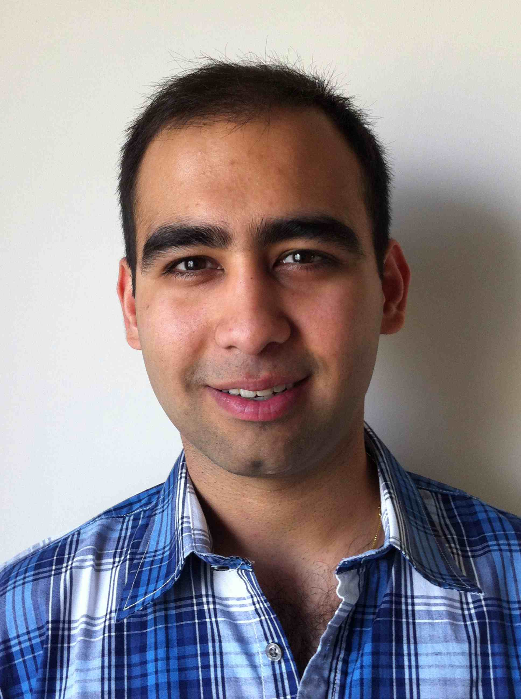

|  |
I completed my Ph.D. from the Electrical and Computer Engineering (ECE) Department in the College of Engineering at Carnegie Mellon University (CMU), affiliated with the Language Technologies Institute (LTI) in the School of Computer Science, and Carnegie Mellon Silicon Valley (CMU-SV). My advisors were Professors Chris Dyer and Ian Lane. I have also worked closely with Joy (Ying) Zhang.
More information:I am primarily interested in statistical natural language processing and machine learning, with applications in statistical machine translation and large-scale data processing.
During my undergraduate days, I conducted research in fiber-optic communications with Prof. Joseph Kahn's Optical Communications Group (2006-2007). I also did a summer research internship with the Goldman Sachs Options Research Group in New York (2006).
I received a B.Sc. (with Distinction) from the Electrical Engineering Department at Stanford University in 2007. In a previous avatar, I worked as an Analyst for the Structured Equity Solutions (SES) Group at Goldman Sachs in both New York and Hong Kong (2007-2009). I was also a Product Manager at July Systems in Bangalore, India (2009-2010), where the product that I launched and managed won the "Best Mobile International" category at the 2010 Mobile Excellence Awards.
I'm a wanna-be amateur photographer. Check out my SmugMug page.
Last updated: January 2016